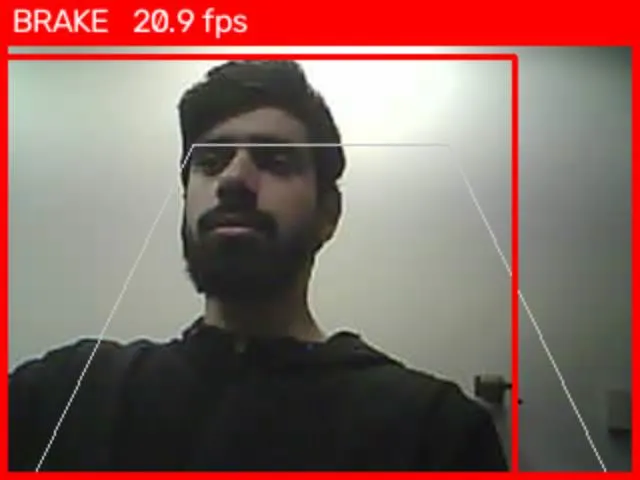

About
I got into engineering through a small frustration: my high school had no cybersecurity classes, so I designed an app that would have taught one. It won the 2023 Congressional App Challenge for Michigan’s 12th District, and it left me with a habit that stuck. I like building the thing, then finding out why it didn’t work the first time.
Now I’m pursuing a dual degree in electrical and computer engineering (because one set of letters felt lonely) at the University of Michigan-Dearborn. It’s where hardware, firmware, and software all have to agree with each other. So far that has meant STM32 and ESP32 boards, an FPGA tail light controller, and Python scripts that test them. Debugging hardware is mostly nothing responds...nothing responds...and then one swapped wire fixes everything.
Outside of lectures, I’ve worked as a digital accessibility assistant and an academic tutor, and I’m on the electrical team at the Intelligent Systems Club. All three taught me to explain technical ideas to people with very different backgrounds. These days I’m looking for work where I can build, test, and debug real systems.
Featured projects

CyberVerse
A FlutterFlow mobile app that teaches cybersecurity with XP, a friends leaderboard, and an AI chatbot.

Pedestrian Automatic Emergency Braking prototype
ESP32-CAM video and YOLOv8 person detection grade pedestrians as CLEAR, CAUTION, or BRAKE.

Sequential tail light controller
A Moore state machine on an FPGA that runs left, right, and hazard sequences like a 1966 Thunderbird.